CMSC424: Transactions — Recovery: Atomicity, Durability, and Logging
Instructor: Amol Deshpande
1. What Recovery Is About
Recovery in a database system is the problem of guaranteeing two of the four ACID properties — Atomicity and Durability — in the presence of failures. Recall that atomicity requires a transaction to execute entirely or not at all, and durability requires that the effects of committed transactions survive any subsequent failure. These two guarantees are closely intertwined: the mechanisms that ensure one largely ensure the other, which is why they are typically addressed together.
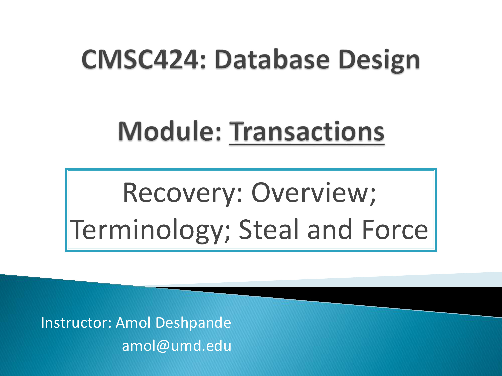
Isolation, the third DBMS-provided guarantee, interacts with recovery as well. In the discussion that follows, we assume that the system uses locking for concurrency control — specifically strict two-phase locking. This assumption simplifies the recovery argument and corresponds closely to what production systems do; we will see exactly why it is needed when we reach the undo algorithm.
The motivating examples are familiar: a transaction that raises salaries for all instructors touches many rows across many disk blocks. If the system crashes after updating some rows but before others, the database is left in an inconsistent state that no serial execution of any transaction would produce. Similarly, deleting a course section requires deletes from takes, teaches, and section — three separate operations that must succeed or fail as a unit. Recovery is about ensuring that either all three happen or none of them do, even in the face of hardware crashes.
2. The Types of Failures
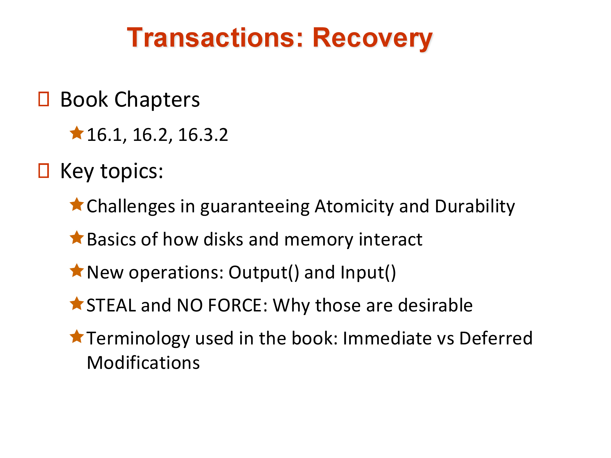
Three categories of failure concern a database system.
Transaction failures occur when a transaction does not complete: the application may contain conditional logic that causes it to abort, or the database system may kill the transaction to resolve a deadlock. In either case, the transaction has performed some work that must be undone.
System crashes are the central concern. A power failure, operating system bug, or hardware fault can terminate the database process at any moment. Every transaction that was in progress at the time of the crash is left in an uncertain state: some of its updates may have reached disk, others may still be in memory and are now lost.
Disk failures — a head crash that destroys the platter, for example — are handled through replication and backup, not through the logging mechanisms we discuss here. For our purposes, we make a critical simplifying assumption: disk contents are not corrupted by a system crash and data on disk is not lost. This is not a real physical guarantee, but it corresponds to what production systems achieve through RAID, replication, and backup — they ensure that a disk the system can read is correct. Given this assumption, disk is our only truly permanent storage: anything written to disk before a crash is still there when the system comes back up.
3. The Memory/Disk Model
To reason about recovery, we need a precise model of where data lives and how it moves.
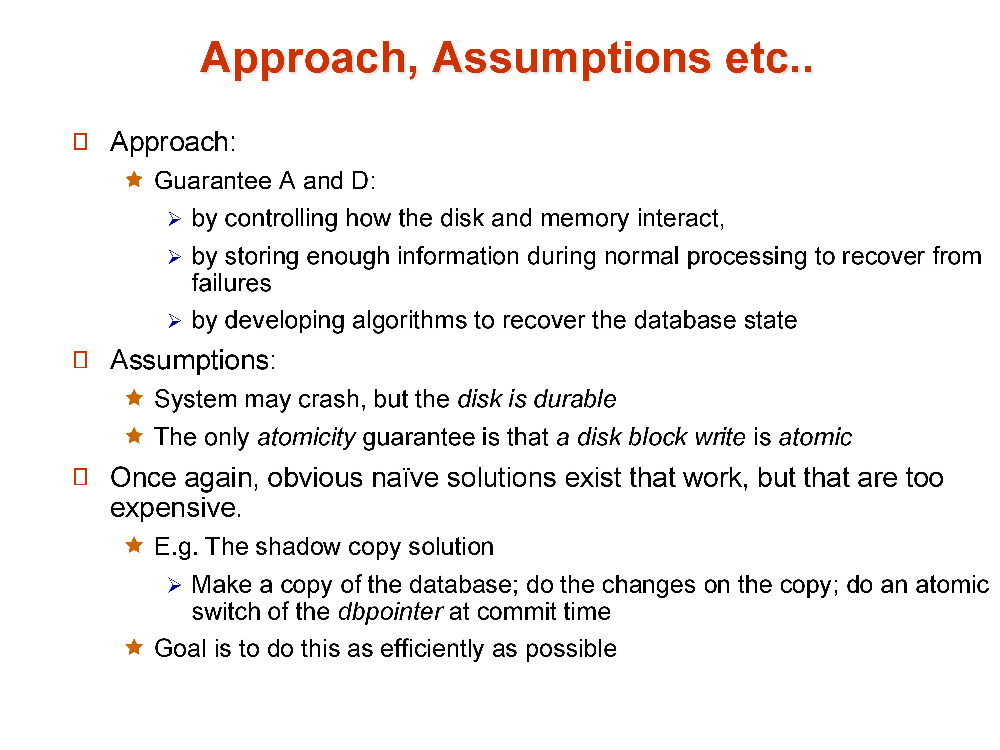
Physical blocks reside on disk. Buffer blocks are copies of physical blocks held in the memory buffer pool, which is shared among all transactions and queries and is managed by the buffer manager. Each transaction also has its own private work area — like the memory of a process — where it holds local copies of the specific data items it is currently manipulating.
Two special operations govern data movement between disk and memory:
input(B): copy physical block \(B\) from disk into a buffer blockoutput(B): copy buffer block \(B\) to the corresponding physical block on disk
These are the only mechanisms for getting data to and from disk; the unit of transfer is always a full block. Even if a transaction needs only a single byte from a block, the entire block must be brought into the buffer pool first.
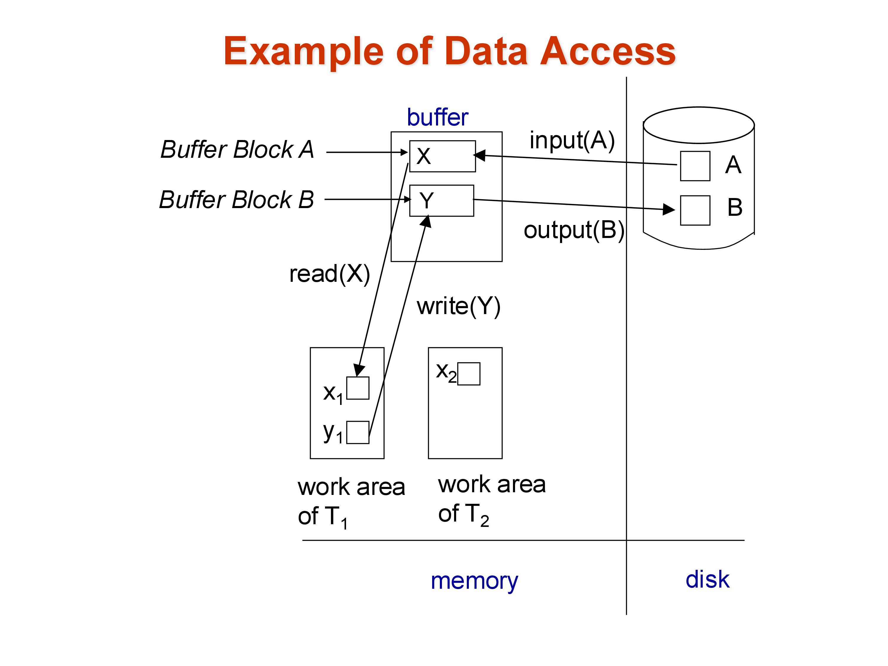
Within this model, the read(X) and write(X) operations that transactions issue are not direct disk accesses. read(X) copies item \(X\) from the shared buffer block into the transaction’s private work area. write(X) copies the transaction’s local value of \(X\) back into the shared buffer block. This write makes the new value visible to other transactions but does not yet touch disk — the buffer manager decides independently when to flush buffer blocks to disk. The moment write(X) executes, the updated value is in shared memory; isolation guarantees (enforced by locks) are what prevent other transactions from reading it prematurely.
This architecture is what makes recovery hard: a transaction’s updates pass through memory on their way to disk, and a crash can interrupt that journey at any point.
4. Steal and Force
Given this model, two independent policy decisions by the buffer manager determine what the recovery system must be able to do.
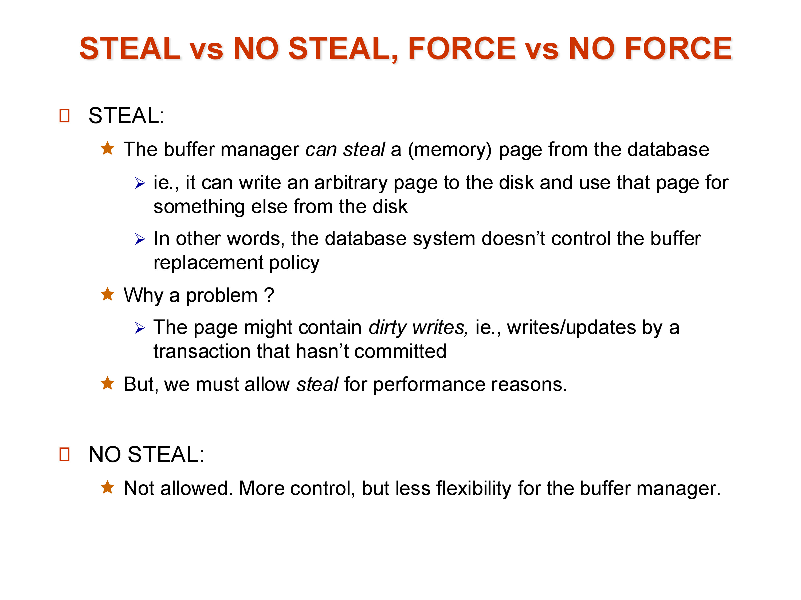
Steal: may the buffer manager write a dirty page — one containing updates from an uncommitted transaction — to disk? The alternative is no-steal: dirty pages may not be evicted until the transaction commits. No-steal sounds appealing from a recovery standpoint, but it is impractical: if a transaction holds many buffer pages in its dirty state, no other transaction can use those buffer slots, and the entire database stalls. Production systems must allow steal.
Force: must the buffer manager flush all of a transaction’s updates to disk before the transaction is allowed to commit? The alternative is no-force: pages need not be on disk at commit time. Force is equally impractical: a transaction that updates many rows across many disk blocks would force the database to perform random I/O for every one of those blocks before the commit could complete, producing unacceptably high commit latency. Production systems use no-force.
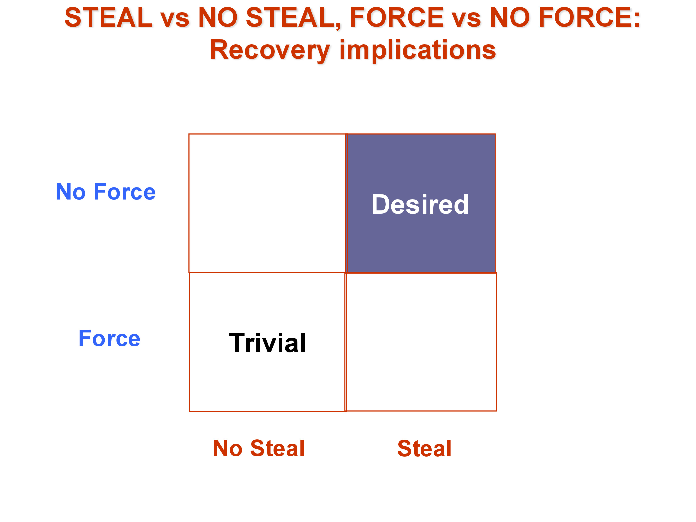
These two decisions produce a 2×2 matrix of policies. The easiest corner for recovery is no-steal + force: dirty pages never reach disk (so there is nothing to undo after a crash) and all committed updates are flushed (so there is nothing to redo). But this corner is the one no production system can afford. The hardest corner — and the one all production systems use — is steal + no-force: the buffer manager writes dirty pages whenever it needs space, and commits do not require flushing data to disk.
The consequence is that both types of work are possible after a crash:
- Undo work: a transaction was in progress, some of its dirty writes reached disk via steal, and now those writes must be reversed because the transaction never committed.
- Redo work: a transaction committed, but some of its writes had not yet been flushed to disk (no-force), and so they must be reapplied.
The logging mechanisms described in the rest of these notes exist to make both kinds of work possible.
5. Logs
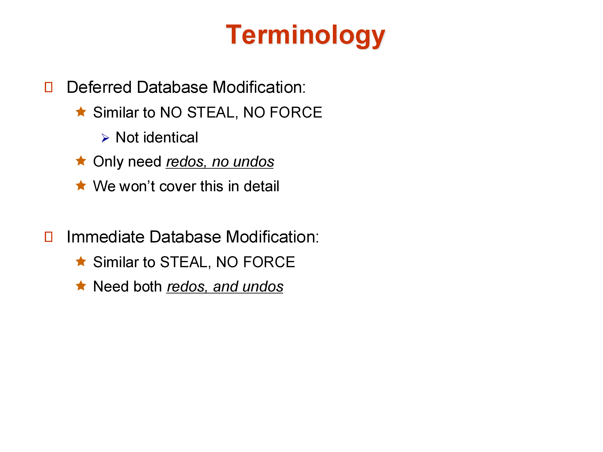
A log is a record of every operation the database system performs, written sequentially to a separate log disk. Writing to the log is fast: log records are appended one after another to the same file, producing sequential I/O rather than the random I/O of writing data pages. In high-performance deployments, the log lives on a dedicated disk or set of disks that is never used for data pages, so log writes never compete with data writes.
Every log record carries a Log Sequence Number (LSN) — a monotonically increasing integer that uniquely identifies the record and encodes its position in the log. LSNs are fundamental: they allow recovery to determine the order in which operations occurred and to check whether a given update has already been applied to a given page.
The standard log record types are:
<T, START>: transaction \(T\) has begun.<T, COMMIT>: transaction \(T\) has committed successfully.<T, ABORT>: transaction \(T\) has been aborted (all its changes have been undone).<T, item, old_value, new_value>: transaction \(T\) updateditemfromold_valuetonew_value.
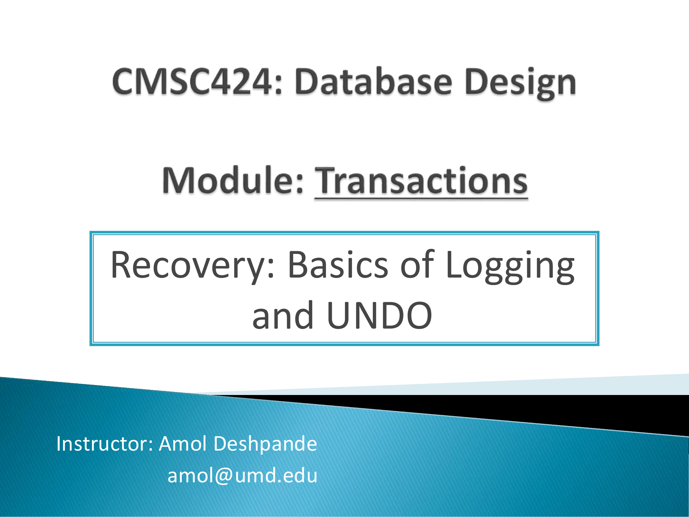
The inclusion of both the old value and the new value in update records is essential. The new value allows redo; the old value allows undo. Some textbook formulations show only the new value (called deferred modification) or only the old value (immediate modification), but the standard practice in production systems — and what we use throughout — is to record both. As a practical matter, item is some form of record identifier (a tuple ID or physical location) that uniquely identifies the specific record being updated; the exact representation depends on the system.
6. Write-Ahead Logging
Two ordering requirements on log writes are non-negotiable.
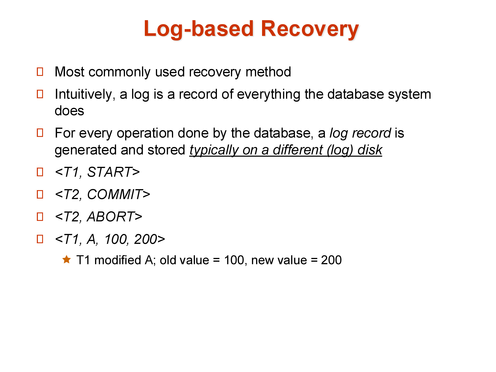
First requirement: the log record must reach disk before the corresponding data page. Suppose a transaction updates item \(A\) from 100 to 150. If the update to \(A\) is written to disk but the corresponding log record is not yet on disk, and the system then crashes, recovery has a problem: \(A\) now shows 150 on disk, but there is no record that this was a change made by an uncommitted transaction. Recovery cannot undo the change because it does not know it happened. The fix is straightforward: always write the log record to disk before writing the data page to disk. This is the principle of Write-Ahead Logging (WAL). The log record may safely sit on disk while the data page is still in memory; the reverse is not allowed.
Second requirement: log records must reach disk in LSN order. If the commit record for a transaction is on disk but an earlier update record for the same transaction is missing, recovery sees a committed transaction but does not know what it did — a state it cannot recover from, because the missing log record is gone and cannot be reconstructed. Log records written in strict LSN order ensures this cannot happen; since log records are appended sequentially to a file, this is the natural behavior.
A third requirement follows from durability: a transaction is not considered committed until its <T, COMMIT> record is on disk. The system must not acknowledge a commit to the user — print the receipt, return success — until that record has been durably written. This is the one case where we do require something to be written before the acknowledgment: not a data page, but a log record. Because log writes are sequential and cheap, this does not impose the same penalty as force-flushing data pages.
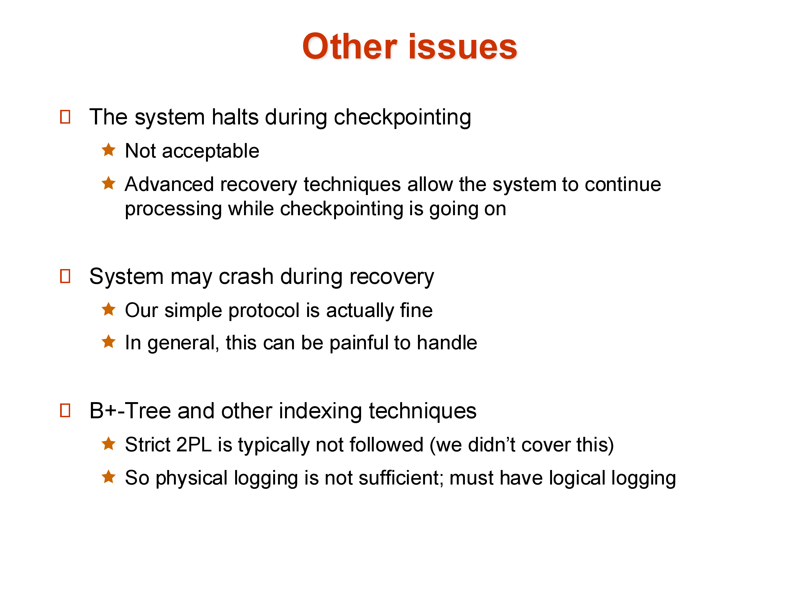
WAL is enforced mechanically through a field called pageLSN on every buffer page. When a transaction updates data on a page, the page’s pageLSN is set to the LSN of the corresponding log record. When the buffer manager prepares to write a page to disk, it checks the page’s pageLSN against the highest LSN that has been durably written to the log disk. If the log has not yet flushed through that LSN, the buffer manager waits until it has. This handshake ensures that log records always precede their corresponding data pages on disk.
7. Using Logs to Abort Transactions: UNDO
When a transaction must be aborted — whether because the application decided to cancel, because the user interrupted it, or because the database killed it to break a deadlock — its effects must be reversed. The log provides everything needed.
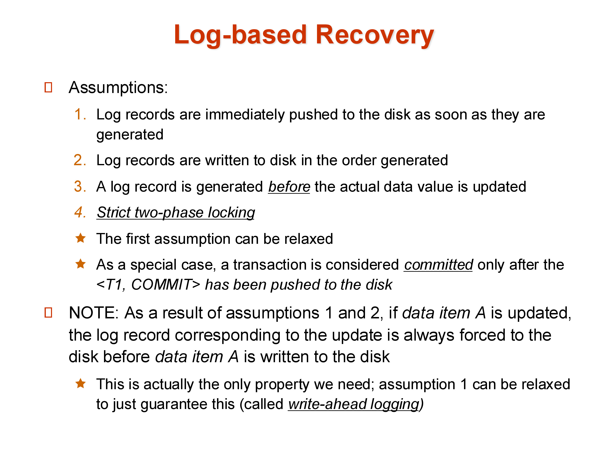
The undo algorithm traverses the log in reverse order, starting from the transaction’s most recent log record and working back to its <T, START> record. For each update record <T, item, old_value, new_value>, the algorithm restores item to old_value. This is straightforward: look at the log record, write the old value back to the buffer. No accounting for which updates were already applied to disk is needed — just write the old value.
Going backward through the log is essential because a transaction may update the same item more than once. Working forward would restore an intermediate value rather than the original one.
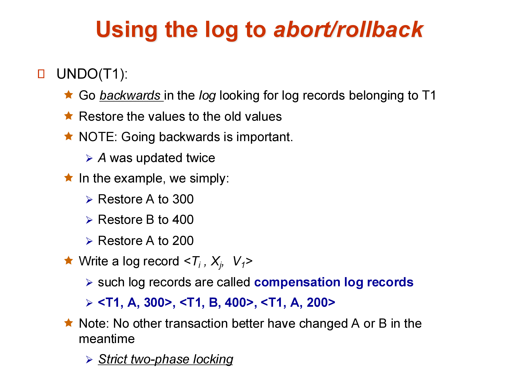
Each undo action is itself logged. When the algorithm restores item to old_value, it writes a Compensation Log Record (CLR) of the form <T, item, old_value> to the log. After all updates have been undone, it writes <T, ABORT>. The CLRs serve a crucial purpose: if the system crashes while undo is in progress, the recovery process that runs on restart will encounter the CLRs and know which undo actions have already been applied, preventing double-undo.
Why strict two-phase locking is required for undo: the undo algorithm restores items to their old values, which requires holding locks on those items throughout the undo process. If a transaction had released its locks before abort — as would happen under plain 2PL’s shrinking phase — another transaction could have read or updated those items in the interim, making it impossible to cleanly reverse the original transaction. Strict 2PL’s guarantee that X-locks are held until the transaction commits or aborts ensures that no other transaction has touched the items being undone.
8. Using Logs After a Crash: REDO
A system crash wipes out all of memory. Every update that a committed transaction had written to the buffer pool but not yet flushed to disk is lost. The log, sitting safely on its separate disk, survives. Recovery uses it to reconstruct those lost updates.
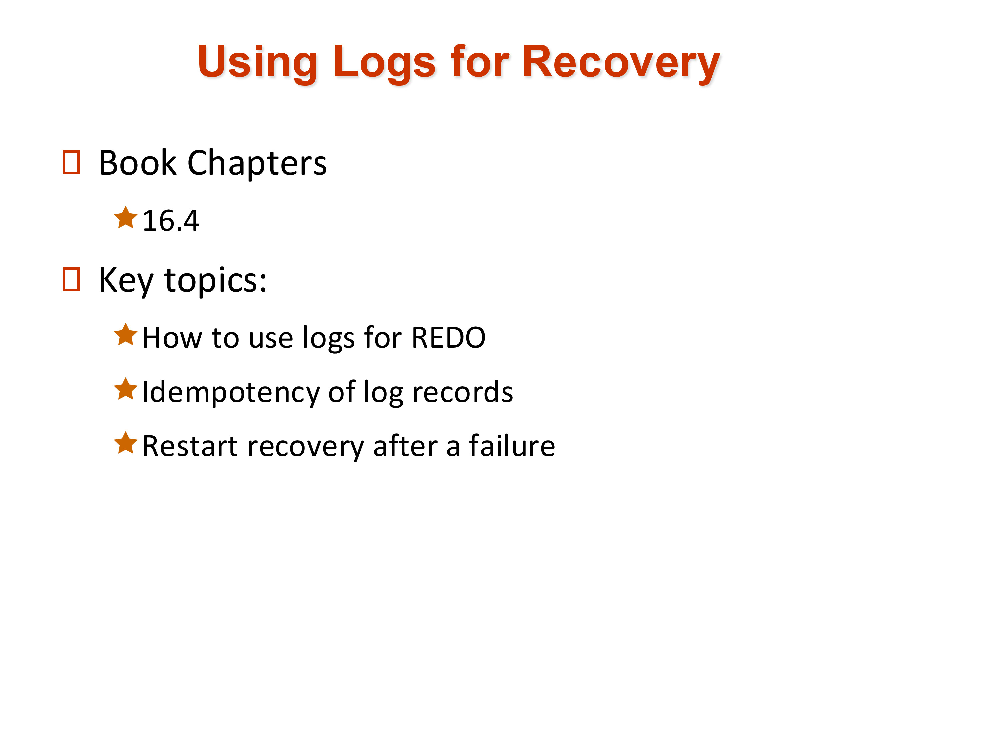
The redo algorithm traverses the log from the beginning in forward order, applying every update it encounters — including updates from transactions that ultimately committed, and also from transactions that were in progress and will later need to be undone. For each update record <T, item, old_value, new_value>, the algorithm writes new_value to item in the buffer, which will eventually reach disk.
Crucially, the redo algorithm does not check whether a particular update is already reflected on disk — it simply applies it regardless. This simplicity is possible because update records are idempotent: setting item to new_value twice produces the same result as doing it once. This property depends on using value-based (physical) logging — recording the specific new value to be written — rather than operation-based logging, which would record something like “increment A by 100.” An increment is not idempotent: applying it twice produces the wrong answer. Value-based logging avoids this problem entirely, at the cost of slightly larger log records.
After the redo phase completes, the buffer contains the state the database was in at the moment of the crash — including the partial updates of uncommitted transactions that had been written to the buffer before the crash. These must now be reversed.
9. The Recovery Algorithm
The complete recovery algorithm combines redo and undo in sequence.
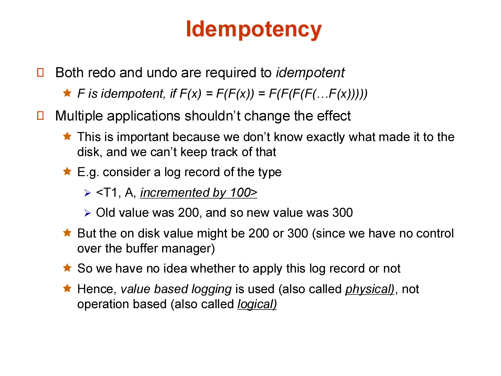
Phase 1 — Redo: begin at the start of the log (we will later qualify this with checkpoints) and traverse forward. Maintain an undo list of transactions that have started but not yet committed or aborted. For each <T, START> record, add \(T\) to the undo list. For each <T, COMMIT> or <T, ABORT> record, remove \(T\) from the list. For each <T, item, old_value, new_value> record, apply the update. At the end of the log, the undo list contains exactly the transactions that were in progress when the crash occurred.
Phase 2 — Undo: traverse the log in reverse, applying undo to every update from a transaction in the undo list, writing CLRs for each, until all such transactions have been fully undone. Write <T, ABORT> for each one as it completes.
The logic is deliberately simple: redo everything without discrimination, then undo the subset that needs undoing. There is apparent waste — redoing updates that will immediately be undone — but the simplicity of reasoning about the system’s correctness justifies it. More sophisticated implementations (such as ARIES) avoid some of this work by tracking which pages have already been updated on disk and skipping unnecessary redo, but the basic algorithm here is the foundation.
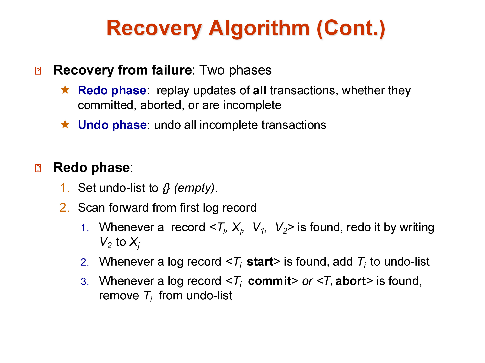
Consider a concrete example: the log contains entries for T0 (which committed) and T1 (which was in progress when the crash occurred). The redo phase applies all updates from both transactions. T1 is in the undo list at the end. The undo phase reverses T1’s updates in reverse order, writing CLRs, and then writes <T1, ABORT>. The result is that T0’s committed changes are fully reflected and T1 leaves no trace.
10. Checkpointing
Starting the redo phase at the very beginning of the log is impractical: the log may span days or months of operations, and replaying it from the start would make restart recovery take hours. Checkpointing solves this.
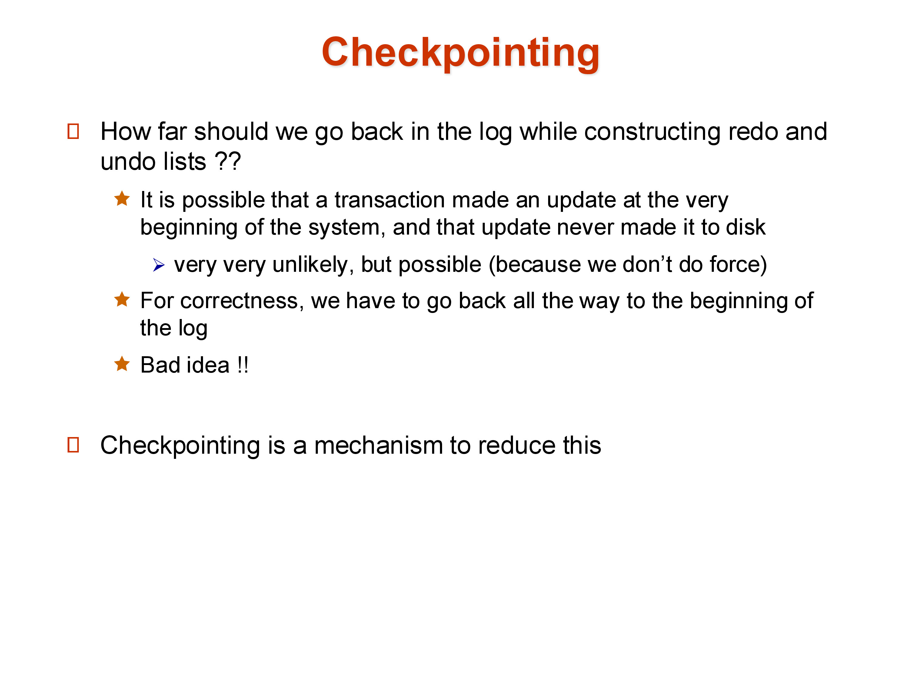
A checkpoint proceeds in three steps. First, the database stops accepting new transactions temporarily. Second, it flushes the entire contents of the buffer pool to disk — not just the updates of committed transactions, but everything, including dirty pages from uncommitted transactions. Third, it writes a special checkpoint record to the log listing all transactions that are currently active (started but not yet committed or aborted), and ensures this record reaches disk.
After a checkpoint, the recovery system knows that every update recorded in the log up to the checkpoint is already on disk. The redo phase therefore does not need to go back further than the last checkpoint.
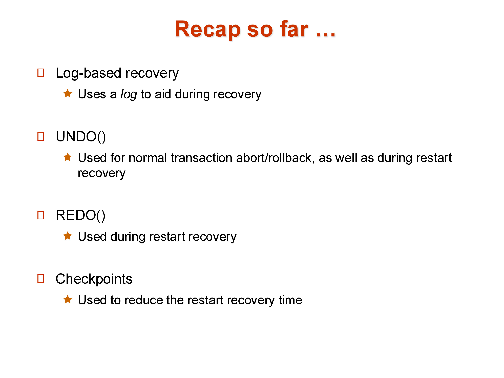
Why the active transaction list is essential: suppose a transaction T0 started before the checkpoint and was still running when the checkpoint was taken. T0’s updates up to the checkpoint were flushed to disk. T0 then continued, making additional updates after the checkpoint. The system crashes. When recovery begins, the redo phase starts at the checkpoint record and processes only log entries after it. Without the active transaction list in the checkpoint record, the recovery system would never see T0’s <T0, START> record — it starts too late in the log — and would not know to include T0 in the undo list. T0’s updates from before the checkpoint would remain incorrectly on disk with no corresponding abort record.
The checkpoint record’s list of active transactions seeds the initial undo list. Transactions in that list that appear nowhere in the post-checkpoint log are still added to the undo list, and the undo phase looks back into the pre-checkpoint log as needed to undo their updates.
The modified recovery algorithm with checkpoints:
- Find the most recent checkpoint record in the log.
- Initialize the undo list with the active transaction list from the checkpoint record.
- Begin the redo phase at the checkpoint record and proceed forward to the end of the log, updating the undo list as before.
- Perform the undo phase as described, consulting pre-checkpoint log records when necessary.
Checkpoints are taken periodically (say, every 60 seconds) to bound the amount of log that must be replayed after a crash.
11. Putting It Together: UNDO, REDO, and the Steal/Force Matrix
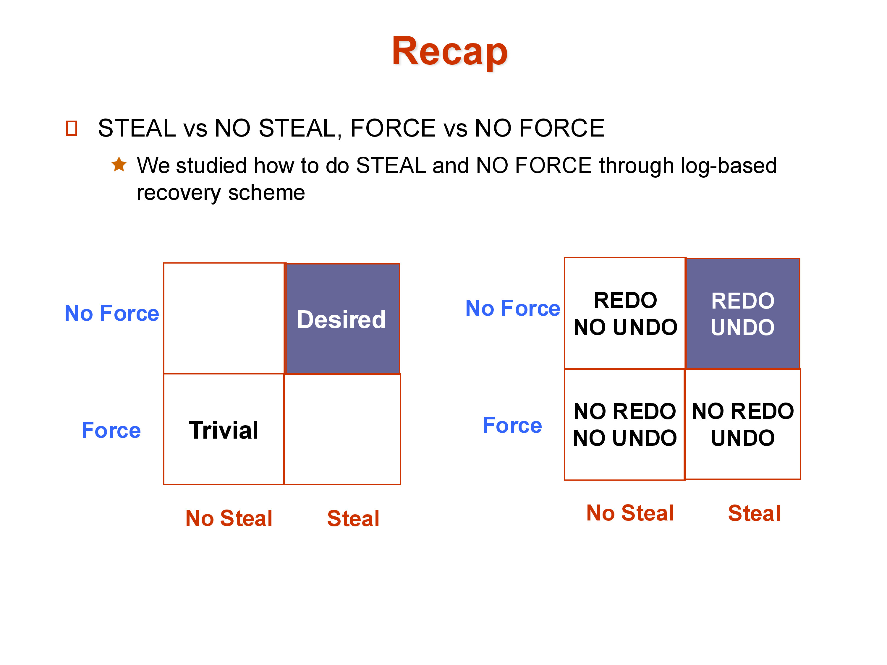
The relationship between steal/force policy and log requirements is direct:
Steal makes dirty pages from uncommitted transactions reachable on disk before commit. If the system crashes, those pages must be reversed. This is what the undo log (old values in update records) enables. Without steal, no uncommitted updates ever reach disk before commit, and undo for recovery purposes is unnecessary — though undo is still needed for transaction aborts.
No-force means committed transactions may have updates sitting only in memory at the time the commit acknowledgment is sent. If the system crashes, those updates are lost. This is what the redo log (new values in update records) enables. Without no-force (i.e., with force), all updates are guaranteed on disk at commit time, and redo is unnecessary.
The steal + no-force combination — the one all production systems use — requires both undo and redo logs, which is exactly what the log record format <T, item, old_value, new_value> provides.
CLRs and the interaction of undo and redo: CLRs make the redo phase safe even when it encounters a transaction that was being aborted at the time of the crash. Without CLRs, redoing a partial undo would leave the database in a state that differs from what the undo algorithm intended. With CLRs, the redo phase simply applies them like any other log record, faithfully reconstructing the state the undo was producing. The undo phase then continues from where undo left off before the crash.
12. Limitations and the ARIES System
The algorithm described here is intentionally simplified. Production-grade recovery systems address several additional challenges:
Non-quiescing checkpoints: stopping all transactions during checkpointing is unacceptable in a high-throughput system. Fuzzy checkpointing allows transactions to continue running during the checkpoint. This requires more careful bookkeeping to ensure that the recovery algorithm can still find a consistent starting point.
System crashes during recovery: the recovery process itself can crash. Our algorithm is actually tolerant of this: because CLRs are written and redo is idempotent, restarting recovery from the last checkpoint and replaying the log produces the correct result regardless of how many times the recovery process is interrupted.
B-tree indexes: strict two-phase locking cannot be applied to B-tree pages in a naive way. Updating a B-tree during a transaction may require structural modifications (splits and merges) that must release locks on intermediate nodes before the transaction commits, otherwise the entire tree would be locked for the duration of every insert or delete. This requires logical logging — recording the logical operation rather than the physical page change — which introduces its own complications for undo and redo. This is an active area of database systems research, covered in graduate-level courses.
ARIES (Algorithm for Recovery and Isolation Exploiting Semantics) is the canonical description of log-based recovery as implemented in production systems. First described in a 1992 research paper by Mohan et al., ARIES addresses all of the above: fuzzy checkpointing, crash-during-recovery, logical logging for indexes, nested transactions, and more. The ideas from ARIES underlie the recovery systems in IBM DB2, SQL Server, PostgreSQL, and most other major database engines. It remains required reading in graduate database courses.
13. Summary
Recovery guarantees atomicity and durability despite two competing pressures: the need to allow the buffer manager to flush dirty pages at will (steal, for performance), and the need to avoid flushing data to disk at commit time (no-force, for low commit latency). Both policies create the possibility of incorrect disk state after a crash.
The solution is logging:
- Every update is recorded in a log with both its old and new value, before the update is applied (WAL).
- Log records are flushed in LSN order; a transaction is committed only when its commit record reaches the log disk.
- After a crash, redo replays the log forward from the last checkpoint, reconstructing the buffer state at the time of crash.
- Undo then reverses the updates of uncommitted transactions, writing CLRs to make undo itself recoverable.
- Checkpoints bound the length of log that must be replayed, by periodically flushing all dirty pages and recording the list of active transactions.
- Strict two-phase locking is required throughout: locks must be held until commit or abort to ensure that undo can cleanly reverse a transaction’s effects without interference.
The next set of notes covers the final topic: distributed transactions, where atomicity and durability must be guaranteed across multiple machines that can each fail independently.